Detail Proyek
- Mata Kuliah: COMP6643 - Artificial Intelligence
- Kelas: LA03
- Nama Kelompok: AquaLife by Mir.AI
In order to view the entire storyboard, Click Here or press
Anggota Kelompok
- Andre Lay - 2301874815
- Gregorius Albert - 2301854486
- Kevin Putra Yonathan - 2301871555
- Reiner Telasman - 2301874632
- Reinhart Previano Koentjoro - 2301860053
- William Chrisandy - 2301862941
As a maritime country, Indonesia has such a big potential in aquaculture.
However, lack of proper system management is still a big issue.
This has resulted in a poor environment for both the aquaculture animals as well as humanity.
And even worse, this could also create gaps of fraud and chicanery from irresponsible parties.
However, encouraging them for cultivating aquaculture for personal satisfaction and business could bring the light in the society and even the country.
This has become our main mission to bring and deliver AquaLife to the people.
AquaLife is one of our products focusing on aquaculture maintenance for people and businesses.
Here, we utilize Artifical Intelligence to monitor, maintain, and give recommendations to people to care and support the aquaculture life.
The presence of AquaLife brings them hopes and benefits by enhancing productivity, efficiency, simplicity, and convenience to our people.
Our users simply need to install our devices to their aquaculture environments (aquariums, ponds, etc.), and connect them online.
|
The users will then be able to access our app to monitor their devices and gather insights, as shown.  This is an interactive preview. Try scrolling and navigating to see all the features. |
Live Mockup Preview
While purchasing and subscribing, our users will be able to test and participate to improve our AI-based tool, which in turn will recommend them to develop better and sustainable aquaculture environment.
We believe that AquaLife could co-benefit and empower our users. By providing our best and expertise in tools, powered by feedbacks from users, AquaLife will be able to provide professional, automated and personalized services to assist them in growing the aquaculture.
The End
Thank You